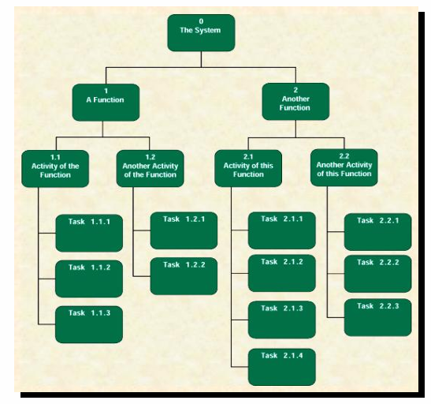
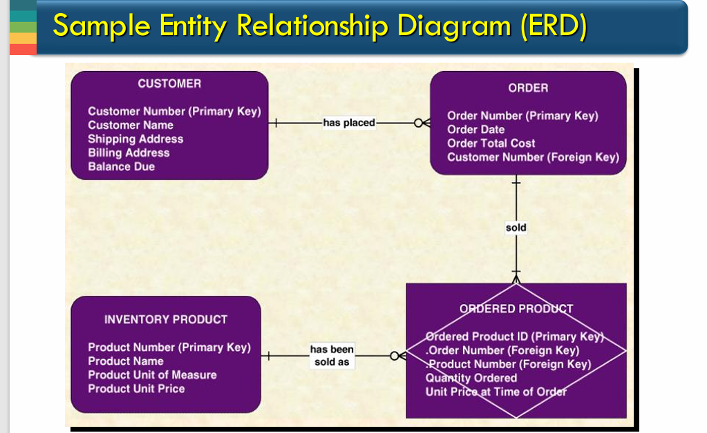

## 2.Gantt图
## 2.Gantt图  ## 3.数据流图 DFD
## 3.数据流图 DFD
## 2.Gantt图 ## 3.数据流图 DFD
四个基础元素 2.矩形 外部实体 External 3.半封口 Data
store需要长久储存的数据 4.带箭头的实线 Data Flow 临时性数据
Function decomposition  A system is
a Process ## 4.E-R图  ER图
Entity实体（一类数据）数据类型 定义域 缺省值 RelationShip（负载性联系）
## 5. Use-Case图